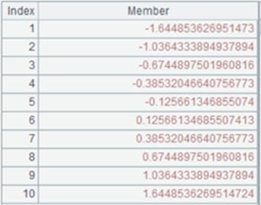
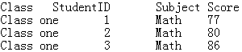

Description:
Synchronously segment a cluster entity table according to a cluster multicursor and return a cluster multicursor.
Syntax:
T.cursor(x;C,…;wi;mcs)
Note:
The function synchronously segments cluster entity table T according to cluster multicursor mcs, during which T’s dimension and mcs’s key will be matched, and returns a cluster multicursor; the way of distributing T and mcs among nodes must be the same and the fields for segmenting T and mcs should be consistent. If multiple cluster entity tables are involved, use a cluster multicursor as a reference to make sure the segmentation is synchronous.
Parameters:
|
T |
A cluster entity table |
|
x |
Expression |
|
wi |
Filtering condition; multiple conditions are separated by comma(s) and their relationships are AND. You can use the following three types of syntax in a filtering condition: 1. K:Ti K is a field in the entity table; Ti is a table sequence whose primary key is K. The expression filters away records where K=Ti.find(K) is false. When K is not a selected field to be output, just do the filtering as usuall. 2.K:Ti:null Filter away all records that can be found. 3.K:Ti:# K=Ti(K); locate corresponding records using sequence numbers and delete those out-of-range ones and those where Ti(K) is false or null. |
|
mcs |
A cluster multicursor generated from a cluster entity table |
Return value:
A cluster multicursor
Example:
|
|
A |
|
|
1 |
=file("cs1.ctx":[1],"169.254.121.62:8281") |
|
|
2 |
=A1.open() |
Open a cluster composite table |
|
3 |
=A2.attach(table1) |
Retrieve cluster entity table table1 |
|
4 |
=A3.cursor@m(;;2) |
Return a cluster multicursor |
|
5 |
=A2.attach(table2) |
Retrieve cluster entity table table2 |
|
6 |
=A5.cursor(;;A4) |
Segment cluster entity table table2 according to table1’s multicursor; the two tables should use same segmenting field |
Description:
Merge subcursors in a multicursor into a single cursor or a new multicursor with a smaller number of parallel subcursors.
Syntax:
mcs.cursor(n)
Note:
The function merges subcursors in a multicursor into a single cursor, which is the default, or a new multicursor with a smaller number, which is specified by parameter n, of parallel subcursors.
Parameters:
|
mcx |
A memory table/a cluster memory table |
|
n |
Subcursor column name |
Return value:
A common cursor or a multicursor
Example:
|
|
A |
|
|
1 |
=file("D:\\dept2.txt").cursor@m() |
Retrieve dept2.txt as a multicursor |
|
2 |
=A1.fetch() |
 Fetch records from A1’s multicursor |
|
3 |
=A2.cursor().groups(#3:FATHER;count(#1):TOTAL) |
 Merge the multicursor into a common cursor and perform grouping & aggregation |